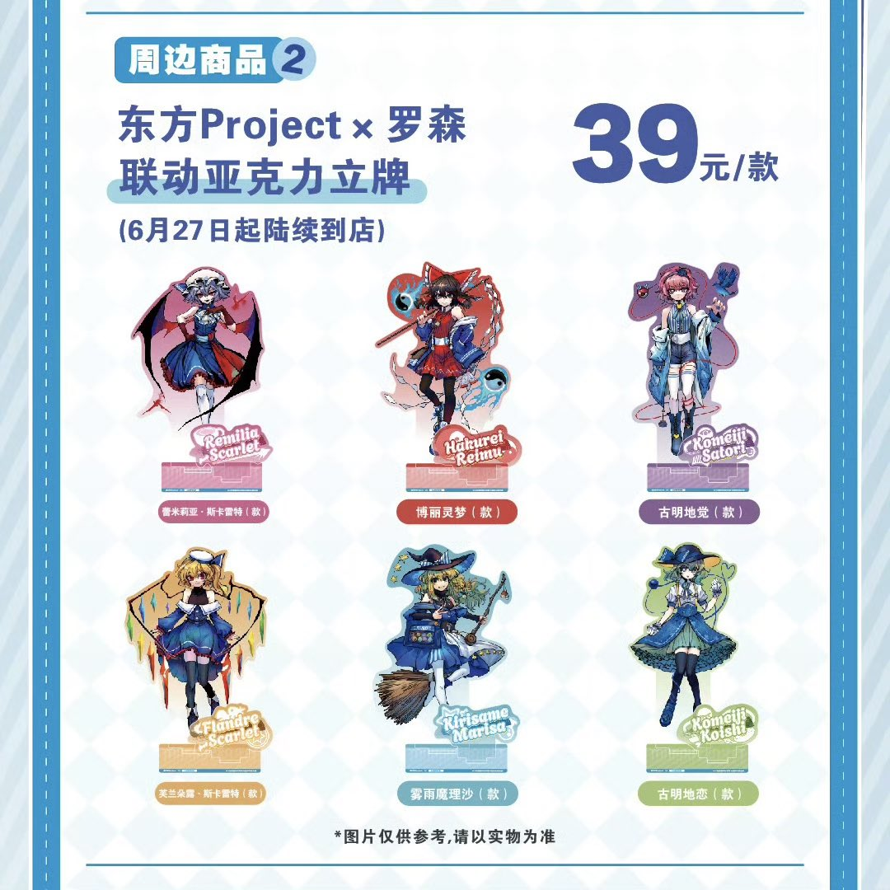
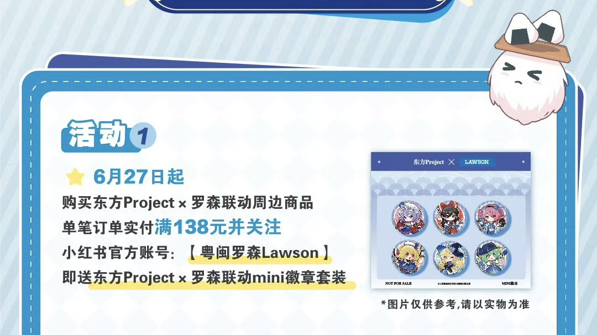

小虚空🍥
@tokerumaisurii
小虚空现在有古明地觉、蕾米莉亚和芙兰朵露立牌各两个，博丽灵梦和魔理沙书签各一张，蕾米莉亚、芙兰朵露、博丽灵梦、魔理沙、古明地觉和古明地恋mini徽章各一个，以及古明地三鲜盖饭的贴纸一张和古明地觉橙C美式的杯套一到两个（都是干净的），愿意免费赠送，只要是和我相对熟悉的角色厨都可以咨询哦w


小虚空🍥
@tokerumaisurii
我想买点罗森东方联名周边，但我厨的不是那六位，所以也许会买完之后适当的送给角色厨……？
我只是想满额拿到那个布袋子……w